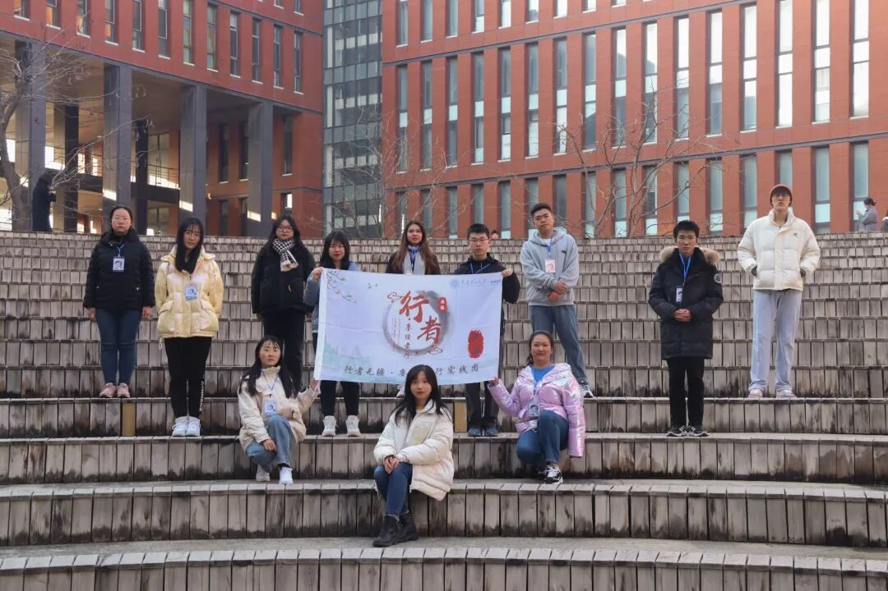
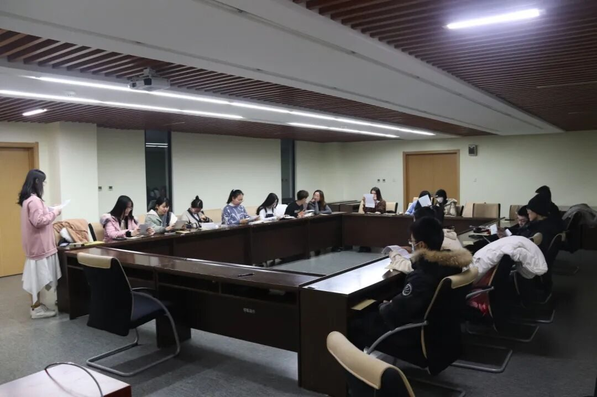
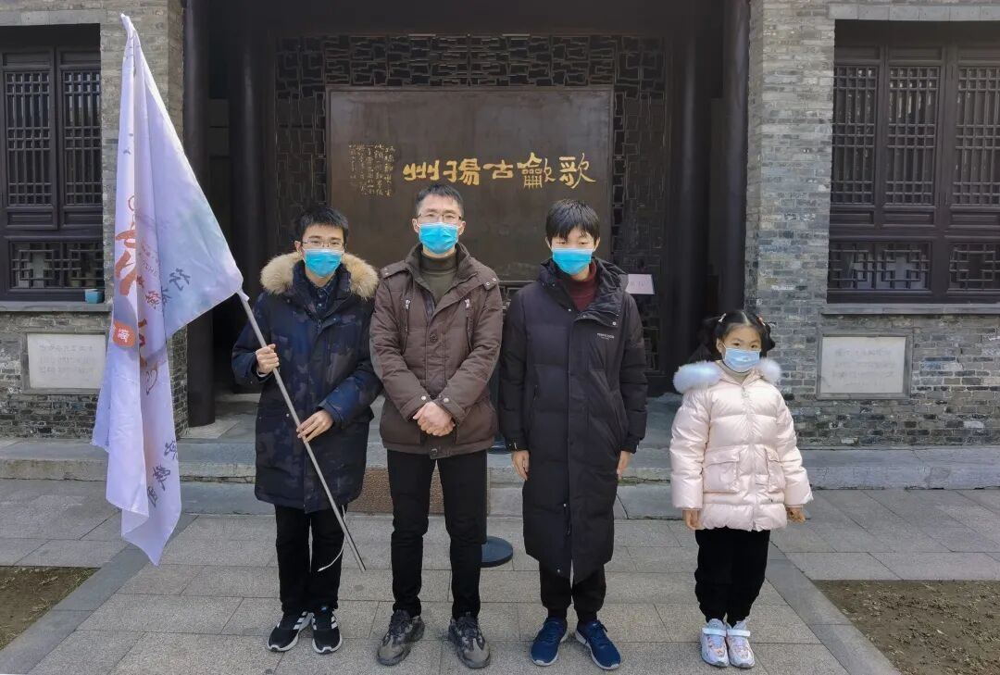
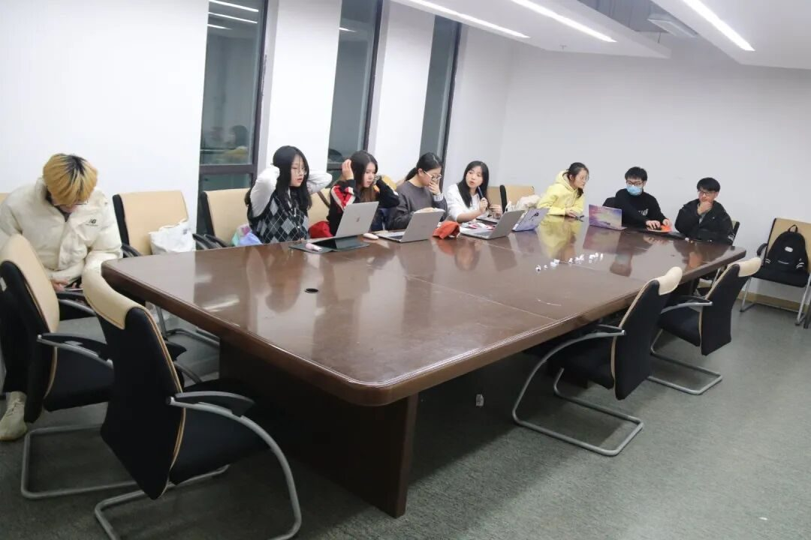
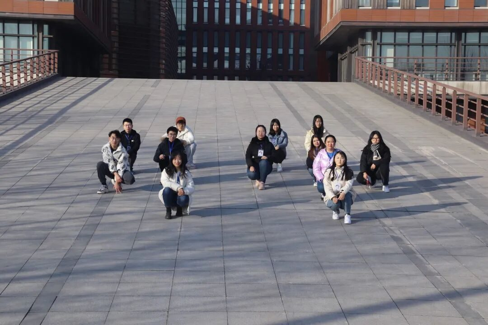

行者，且赶路

行者，
且赶路
01.
时光过得极快，转眼之间，与行者无疆的羁绊已跨过三个假期，同这个大家庭的感觉，不知是倦恋，依赖还是深深的刻入心中，已无言来描述，想起那年，金色的海报，漫漫的黄沙，悠悠的驼铃，又或是柔润的湖水，淮扬的八怪，清丽的早茶，亦是那十期的圆满，创新的挑战，赓续的火苗。恍然，第三次行者之旅，也结束了……
02.

行者这一路，遇见了很多人，有时，耳边不时还传来第八期的学长学姐们的殷切期许与恳恳指导，眼前浮耀着第九期志同道合的行者们面试时散发的光彩，而此时，行者无疆第十期成员正携手奋进，感谢前九期行者们，我们也共同相信，行者，不止于此！
ENJOY
WINTER


03.
初当队长，诚惶诚恐。在去年十月接到学姐对下一期的安排时，我七上八下，从专员到副队到队长，我也明晰流程，但同时，也担心是否能完成整个活动，还记得12月，因为疫情影响，实践变得极其被动，但这时，我遇到了大家，遇到了行者无疆第十期行者们，我们共同商议解决，自前期面试、见面会、指导老师会议、立项，到中期每晚开会总结，白天线下线上结合调研，我们也已完成了4个专访，2个街访，数十篇策划，上百篇总结，而这些，都是我们共同的财富！在后期，大家也积极整理素材，总结实践，每一份文字，每一个推送，每一段视频，我明白，这都是大家对于相知相识的最好馈赠。行者，我们一同前行！

最后一句话，送给所有行者。路途漫漫，前路遥遥，要翻过多少座山，要涉过多少条河，才能走到那个完美的终点？行走，行走，不管是踉跄前行，还是疾风劲走，总是在路途中。踏着取经之路、人生之路、一带一路，我的梦、家族梦、中国梦一定好梦成真。
来源 | 行者无疆实践团
文字 | 温兆琪
排版 | 高懿玢
审核 | 温兆琪 朱华玮